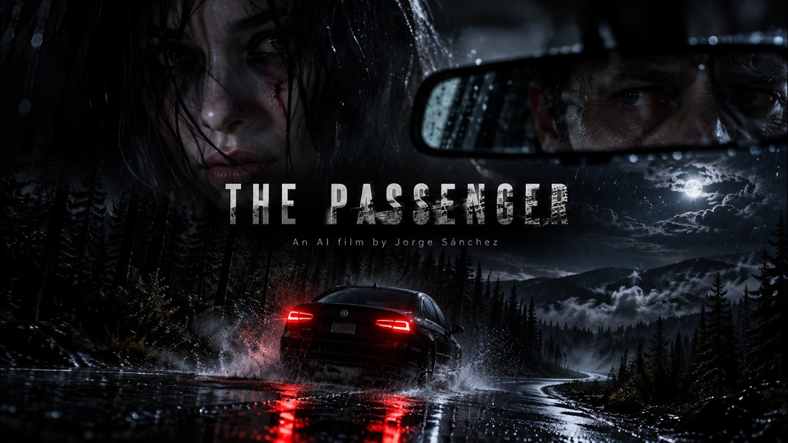
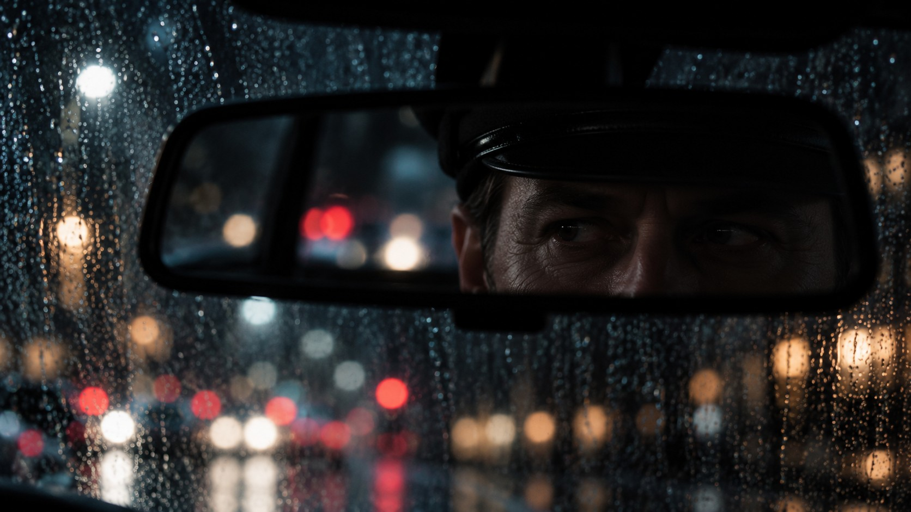
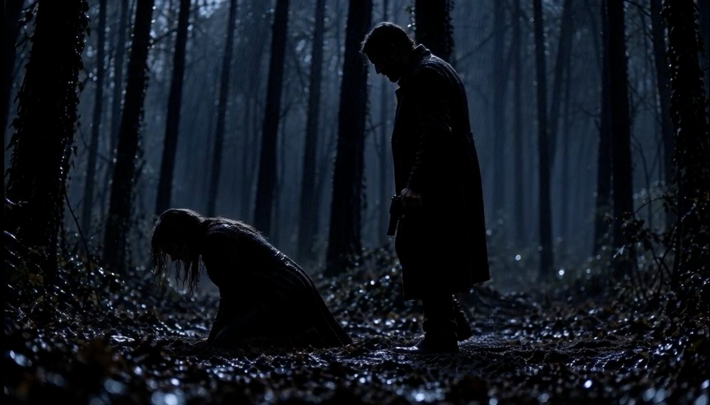
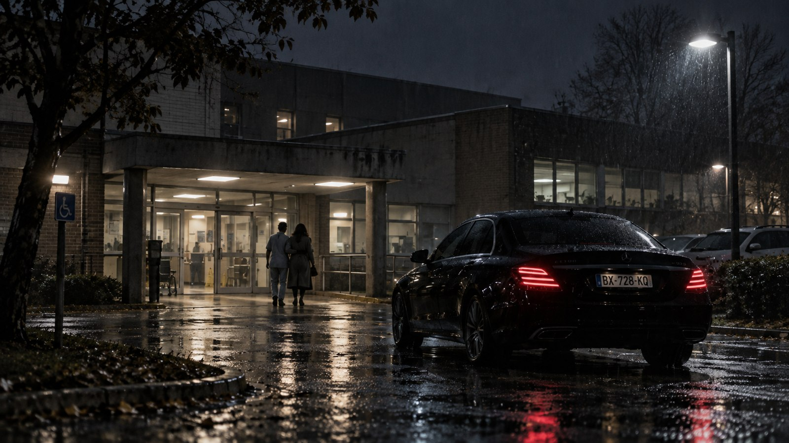
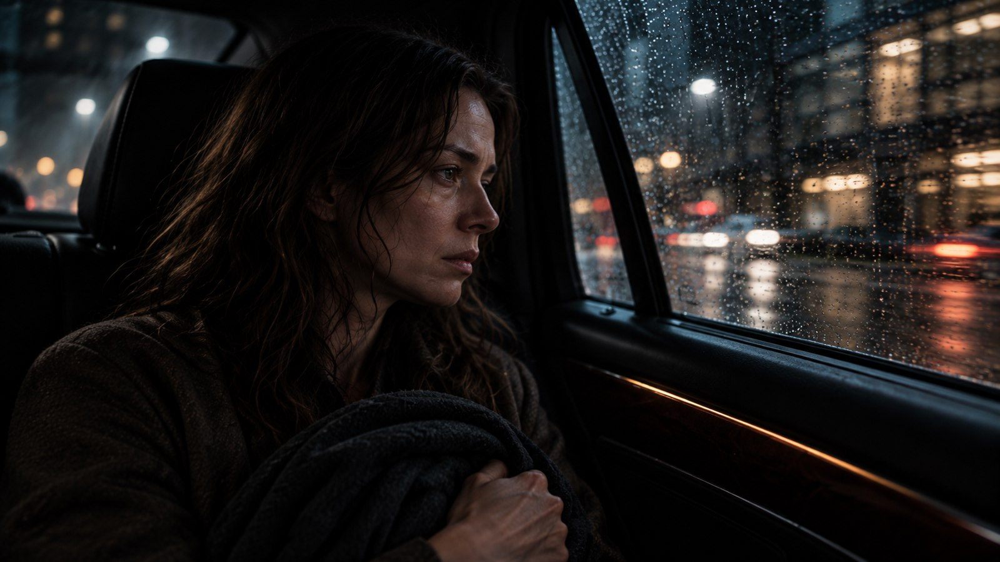
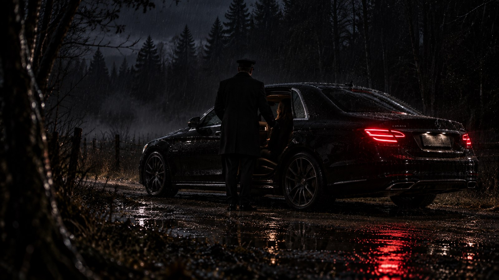

Narrative AI short film
Narrative / AI Short Film
A woman is taken from a mental health facility and driven deep into the forest. What begins as a controlled transfer turns into something else entirely.
Explore 1 film ↓WATCH THE WORK

Narrative AI short film
PROJECT STILLS & START FRAMES




